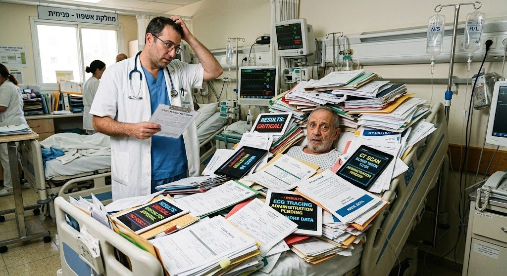

רפואה טובה יודעת גם מתי לא להגזים
ככל שהיכולת שלנו לגלות משתפרת, אנחנו מוצאים יותר. אבל לא כל ממצא הוא מחלה שכדאי לנסות לאבחן ולרפא. החברה למניעת אבחון יתר וטיפול יתר פועלת כדי שהשיקול הזה יהיה חלק מהשגרה הקלינית, מההכשרה הרפואית ומהשיחה עם המטופלים.

מה זה בעצם
שלושה מושגים שחוזרים בכל דיון בתחום, ושכדאי להבחין ביניהם.
- אבחון יתר (Overdiagnosis)
- אבחון של מחלה שאכן קיימת, אך לא הייתה גורמת לתסמינים או לתמותה גם אילו לא הייתה מאובחנת. זה אינו אבחון שגוי ואינו תוצאה חיובית כוזבת — המחלה נמצאת שם, אך הגילוי שלה אינו מיטיב עם מי שאובחן.
- עשיית יתר (Low-value care / רפואה בעלת ערך נמוך)
- בדיקה, בירור, פרוצדורה או טיפול שתועלתם למטופל נמוכה במצבו הקליני הנוכחי — גם אם באותם אמצעים יש תועלת רבה במצבים אחרים. לעיתים קרובות הנזק המצטבר עולה על התועלת.
- מדיקליזציה (Medicalization), הרחבת הגדרות ומסחור מחלות
- הורדת סף האבחון והפיכת תופעות אנושיות שכיחות למחלה, בלי שהוכחה תועלת למי שיאובחן. התוצאה היא אוכלוסייה גדולה יותר של "חולים" — ולא בהכרח אנשים בריאים יותר.
למה זה חשוב
קיומה של תופעת אבחון היתר הוכח מחקרית ברמת האוכלוסייה. עם זאת, כשמטופל בודד כבר אובחן, לרוב לא ניתן לדעת מראש אם הטיפול יועיל לו או לא — ולכן רוב המאובחנים יקבלו טיפול. כך מתחילה שרשרת הנזק:
- תיוג של אדם בריא כחולה, על החרדה ותופעות הלוואי החברתיות והביטוחיות שנלוות לכך.
- סיבוכים של פרוצדורות, תופעות לוואי של טיפולים וחשיפה לקרינה — אצל מי שלא היה נשכר מהם ממילא.
- ממצאים מקריים שגוררים שרשרת בירורים נוספים, שכל אחד מהם עלול לייצר ממצא נוסף.
- הסטה של זמן רופא, תורים ומשאבים ממי שבאמת זקוק להם, וקושי גובר להפריד בין עיקר לטפל ברשימת בעיות ארוכה.
המטרה אינה לבדוק פחות או לטפל פחות, אלא להימנע מעשייה שאינה מועילה. עבודה בתחום הזה צריכה להיעשות בשיקול דעת ובזהירות, כדי שלא תיווצר הרתעה מבירורים ומטיפולים מוצדקים.
הפעילות שלנו
שלושה צירים שבהם מתרכזת עבודת החברה בשנה הקרובה.
בוחרים בתבונה
"בוחרים בתבונה" היא הגרסה הישראלית ליוזמת Choosing Wisely העולמית. האיגודים המדעיים של הר"י מנסחים, כל אחד בתחומו, המלצות "אל תעשה" מבוססות ראיות, לשימוש משותף של רופאים ומטופלים בחדר הבדיקה.
החברה שותפה ליוזמה ומקדמת את השלב שבו הרבה תוכניות דומות נעצרות: לא רק כתיבת ההמלצות, אלא ההטמעה שלהן בפועל בשגרת העבודה.
חינוך רפואי
אבחון יתר כמעט אינו נלמד באופן מסודר. אנחנו מפתחים מערכי שיעור בפורמטים שונים — הרצאה, סדנה ומיני-קורס — לסטודנטים לרפואה, למתמחים ולמומחים בתחומי ההתמחות השונים, לשילוב בבתי הספר לרפואה, בתוכניות ההתמחות ובלימודי ההמשך.
קהילה מקצועית
אבחון יתר אינו נעצר בגבולות ההתמחות, וגם לא בגבולות המקצוע. החברה מאגדת רופאות ורופאים מכל ההתמחויות שמזהים את התופעה בשדה שלהם: באונקולוגיה ובכירורגיה, בריבוי תרופות בגיל המבוגר, בבדיקות סקר ובבירורים שגרתיים.
לצידם, החברות פתוחה כחברות נלווית לאנשי ונשות מקצוע מכל הסקטורים שהעשייה הרפואית עוברת דרכם: אֲחָיוּת, רוקחות, פיזיותרפיה ומקצועות הבריאות, אפידמיולוגיה וכלכלת בריאות, מינהל ומדיניות.
אנחנו בונים מסגרת שתאפשר לחברות ולחברים להיפגש, ללמוד ולקדם יחד עבודה מקצועית ומחקר בתחום.
מצטרפים לחברה
מזהים את התופעה גם במחלקה או במרפאה שלכם? רוצים לקחת חלק בשינוי השיח הרפואי בישראל? הצטרפו אלינו לחברה. החברות פתוחה לרופאות ורופאים חברי הר"י מכל תחומי העיסוק וההתמחויות, וכן לחברות וחברים נלווים מכל הסקטורים.
למילוי טופס הצטרפות (באתר הר"י) (נפתח בחלון חדש)מתלבטים, או רוצים לשמוע עוד לפני שמצטרפים? כתבו לנו.
מקורות וקריאה נוספת
חומרים בעברית ובאנגלית, למי שרוצה להעמיק או ללמד.
- בוחרים בתבונה — הר"י (נפתח בחלון חדש) ההמלצות הישראליות של האיגודים המדעיים, לרופאים ולמטופלים.
- נייר עמדה: מניעת אבחון יתר וטיפול יתר (נפתח בחלון חדש) מסמך לצוותים הכותבים הנחיות קליניות וניירות עמדה מטעם איגודי הר"י.
- Choosing Wisely (נפתח בחלון חדש) היוזמה האמריקאית שהחלה ב-2012, ומאות המלצות של איגודי התמחות.
- Too Much Medicine — BMJ (נפתח בחלון חדש) אוסף מאמרים וקמפיין מתמשך של ה-BMJ בנושא רפואה עודפת.
- Less is More — JAMA (נפתח בחלון חדש) סדרת מאמרים על מצבים שבהם פחות רפואה מיטיבה יותר.
- Preventing Overdiagnosis (נפתח בחלון חדש) הכנס המדעי הבינלאומי בתחום, בשיתוף מרכז ה-CEBM באוניברסיטת אוקספורד.
מי אנחנו
החברה הוקמה ב-2016 כחברה מדעית בהסתדרות הרפואית בישראל. באוגוסט 2026 נבחר ועד חדש, והפעילות מתחדשת.
ועד החברה
- ד"ר תם אקסלרוד יושב ראש
- פרופ' אהרן (רוני) פיינסטון גזבר
- ד"ר מיכאל האוזר מזכיר החברה
- פרופ' אמנון להד
- פרופ' (פיזיותרפיה) נועה בן עמי
- פרופ' דניאל גולדשטיין
- ד"ר שמואל (מוקי) גבעון
- ד"ר יקיר קאופמן
- ד"ר ניר צבר
יצירת קשר
לשאלות, להצעות לשיתוף פעולה, להזמנת הרצאה או סדנה, ולכל דבר אחר:
עמוד החברה באתר הר"י: ההסתדרות הרפואית בישראל (נפתח בחלון חדש)